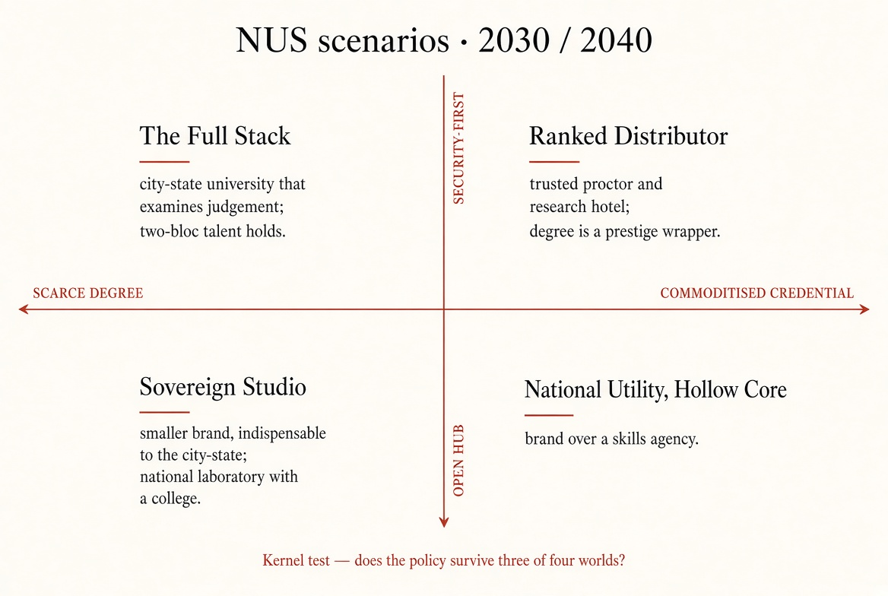

National University of Singapore · Scratch rebuild · September 2026
NUS already has the rank. The next decade is whether 30,000 students leave able to judge work — including work a model wrote — or leave with a famous degree that anyone with ChatGPT could have assembled.
QS 2027 placed NUS 10th in the world and first in Asia. On 31 August 2026 every student and staff member got ChatGPT Edu. Incoming freshmen must take THE1008, a compulsory module on prompting and evaluating generative AI. Provost Aaron Thean said the point is to develop the human, not the AI. That is now the test of the presidency: can exams, studios and clinics still tell a thinking graduate from a well-prompted one?
Same fight as · Cuts A / B / C
Same fight as · City-state compact · judgment room
Board two-pager
For the President and Board of Trustees
The hard problem is this: NUS gave everyone the same AI tools the rest of the world has. If finals, dissertations and studio reviews still mark the finished product rather than the thinking, the degree becomes a receipt for having used ChatGPT on Kent Ridge. Fix how students are examined, give NUS College a job the rest of the university cannot do, pick three national problems the whole campus can be pointed at, and name who follows Tan Eng Chye — or the next decade is a bigger, better-ranked version of the same risk.
Diagnosis in six lines
NUS is no longer trying to become a global university. It already is one. The College of Design and Engineering put six subjects in the world top ten. The Class of 2026 was 17,967 people across 39 ceremonies. Tan spent eight years building the interdisciplinary machine: the College of Humanities and Sciences, the College of Design and Engineering, NUS College after Yale-NUS closed in 2025, a grade-free first year, Overseas Colleges, and the GRIP graduate-research scheme with NTU. That architecture is real. So is the drag. Fifteen faculties do not change exams at the same speed. Most programmes still mark the essay, the code drop, or the report — the thing a model now drafts in minutes — more than the oral, the critique, or the process log. NUS College is an honours overlay on 60-plus majors, with seminars of 20–25 and a two-year residential requirement. It is not the four-year common curriculum Yale-NUS was. RIE2030 will keep paying for labs. It will not decide whether an undergraduate can still think when the first draft is free. Minister Desmond Lee, speaking at NUS120 in May 2026, told every autonomous university to teach baseline AI skills from academic year 2027. NUS can lead that pack. It cannot opt out. NTU has a different software vendor. SMU is running professional seminars on the same problem. UAS has graduated its first cohort. The flagship is now the largest university in a small, crowded system — and the one with the most to lose if an NUS degree just means “used the same tools as everyone else.”
Guiding policy
Stop treating ChatGPT access as the strategy. It is already paid for. Spend the president’s time on four things: rewrite how every faculty examines students; make staff use AI to replace old assignments rather than pile new ones on top; pick three live Singapore problems — health-AI in the hospital system, trusted chips through the SHINE centre, climate adaptation — where medicine, engineering, law and policy have to sit in the same room; and publish a succession plan while Tan is still strong.
Coherent actions
- Start By academic year 2028/29, the default in every faculty is staged work, an oral defence, and a task that asks the student to critique a model’s answer — not a pilot only in Computing. Publish a public list of which programmes actually changed their finals.
- Start Give NUS College a four-year job the other 14 faculties cannot do: a small, hard, residential course in arguing, writing and judging evidence. If the Board will not fund that, stop telling donors NUS College is what replaced Yale-NUS.
- Start Name three national missions and put money across faculties behind them. Do not let every school brand itself an “AI school.”
- Start Put a presidential succession and a provost bench on the 2027 Board agenda. Eight years is already a long Singapore university presidency. An unplanned handover wastes a year the AI problem will not wait for.
- Stop Do not lock the campus to one American software firm. One or two platforms, plus a written plan to switch. The Board should see vendor concentration the way it sees endowment risk.
Start
New work, or old work now under challenge. Orals and staged finals as the default by 2028/29. NUS College as a four-year judgment course. Three funded national missions. A named successor window.
Stop
Practices that no longer produce the scarce product. Treating ChatGPT Edu as the strategy. Marking the finished essay or code drop as if it were still scarce. One-vendor lock. Another ranking campaign as if that were the crux.
Go
Keep, adapt the instrument. The interdisciplinary colleges. Grade-free first year, NOC, GRIP. Two-facing Singapore hub. RIE labs — they pay for apparatus; they do not decide what the degree certifies.
What the Board should watch by 2030
| Signal | If it moves this way |
|---|---|
| Share of finals a student still has to sit closed-book, or defend out loud | If that share keeps falling, an NUS transcript is becoming a log of prompts. |
| What NUS College actually is | If it is only an honours sticker on an ordinary major, the Yale-NUS inheritance is spent. |
| Which AI tools students actually use | If one American firm is the default for 30,000 people, that is a sovereignty issue, not an IT preference. |
| A named successor window before 2028 | An open-ended extension with no bench is how the next presidency starts late. |
| Starting salaries outside computing | If only computing graduates still earn a premium, the “comprehensive university” is already a holding company for one faculty. |
Full report
What NUS is
NUS is Singapore’s first and largest university. It traces to the 1905 medical school. It is the only local institution that can put medicine, law, engineering, design, computing, business, and a full humanities and social-science faculty on one campus and still sit inside the world top ten. That combination is the strategy. NTU can beat it in some engineering ranks. SMU can beat it in a seminar room. Almost no one else can field the whole stack inside a city-state that still treats the university as national infrastructure — the place the government calls when it needs doctors, lawyers, chip engineers and policy people from the same payroll.
About 29,600 undergraduates sit across 15 colleges, faculties and schools. Board chair is Hsieh Fu Hua. President Tan Eng Chye has been in post since 1 January 2018. Provost Aaron Thean also directs NRF’s SHINE microelectronics centre. The Bezos Centre for Sustainable Protein and the AI Institute are the current public monuments. They matter for fundraising and headlines. They are not the thing that will decide whether a 22-year-old’s degree still means something in 2030.
The deeper bargain is older than ChatGPT. Singapore pays a large share of NUS through the tuition grant and research grants, and in return expects the university to take on national missions. AI only sharpens the question the state is already buying: if information and a first draft of analysis are no longer scarce, what is the government paying NUS to produce?
Forces that actually move this institution
- AI as campus infrastructure, not an elective. NUS signed an OpenAI memorandum on 6 August 2026, announced it on 11 August, and switched on ChatGPT Edu for everyone on 31 August. THE1008 — Applied Generative AI: From Prompting to Evaluation — is compulsory for the 2026/27 freshman class. More than 7,700 incoming students started it in July. Thean called the spend “significant but necessary.” CIO Tan Shui-Min said adoption has to be secure, scalable and sustainable. None of that yet says how a history essay or a design review will be marked in 2027.
- A national skills rule NUS cannot sit out. Education Minister Desmond Lee, at the NUS120 event on 21 May 2026, told every autonomous university to put baseline AI competencies into programmes from academic year 2027, and tied the institutes to a national AI council. NUS can write the template. It cannot refuse the template.
- Peers at home are no longer younger siblings. NTU has its own model-vendor stack and a research engine that now competes head-on. SMU is taking the professional-seminar version of the same AI-and-jobs problem. SIT and SUSS take the applied and adult learners NUS used to treat as someone else’s problem. UAS took the arts claim. SUTD still owns a design-and-technology niche. NUS’s remaining uniqueness is breadth plus research mass, not a monopoly on “the” Singapore university.
- The Yale-NUS scar is still open. Yale-NUS College closed on 30 June 2025. What replaced it — NUS College — is seminars of 20–25, a two-year residential requirement, and compatibility with 60-plus majors. That is a way to give more students a small-class experience. It is not the four-year common curriculum the closed college was. Donors and alumni still hear “College” and think they got the old thing back.
- Geopolitics shows up in admissions and co-authorship, not in slogans. NUS has to remain a place a student from Shanghai and a postdoc from Boston can both land. If collaboration with one bloc collapses, the “global university” claim snaps in a single hiring season.
“The core business of a university is really to develop the human, not to develop the AI.” — Aaron Thean, Provost, July 2026
That is a clear statement of purpose. It is not yet a plan. A plan would say which human capacities — oral argument, lab judgement, clinical decisions, the ability to catch a model’s confident error — get tested, in which programmes, by when, and what publication volume the university is willing to trade to make time for that teaching.
Crux
After the interdisciplinary rebuild and the OpenAI rollout, the problem the Board can still do something about is this: change how thinking is examined, point the full campus at a few national problems, and script who runs NUS next. Buying another model does not touch any of those three. Leaving finals as they were in 2023, with an honour-code paragraph about AI, is how a top-ten university becomes a distribution channel for software written in San Francisco.
Kernel Reconstruction, September 2026 — not NUS’s published plan
Diagnosis
NUS built the platform: the colleges, the tools, the rank. A platform does not automatically produce graduates who can judge work. The software arrived before the exams changed. NUS College arrived before anyone decided what it is for. The labs are strong before the Board can name, in one sentence, the three missions those labs are pointed at.
Guiding policy
Give every student fluency with the tools. Make scarcity sit in two places only: how NUS examines, and three live problems in Singapore that need a hospital, a lab and a policy school in the same week. Do not try to out-train Tsinghua on national-scale models, or out-endow MIT. Compete on the combination only this campus has — a city-state that can instrument itself and a university that spans the professions that have to live with the result.
Coherent actions
A public scoreboard, by academic year 2028/29, of which programmes changed their finals. NUS College as a four-year hard course in judgement, or an honest downgrade of the claim. Three funded cross-faculty missions. Succession on the 2027 Board agenda. A hard cap on being stuck with one vendor. Everything else — another institute, another memorandum, another ranking campaign — is hygiene.
Critical uncertainties
Axis A — Singapore’s openness. In one future, Singapore stays a hub where talent and research still move toward both Washington-aligned and Beijing-aligned systems. In the other, security rules, visa friction and export controls make collaboration with one bloc — or both — expensive, slow, or quietly forbidden. That is not a slogan. It is whether a Tsinghua postdoc and a Stanford sabbatical can still land on the same corridor.
Axis B — What an NUS degree is worth. In one future, employers still cannot fake what the degree certifies: this person can defend a decision out loud, catch a bad model output, and work in a clinic, a studio or a courtroom. In the other, the degree is one more certificate in a stack — micro-credentials, model-written portfolios, online badges — and NUS is a trusted name on the wrapper.

The tools and the rank arrived before the exams and the succession plan. NUS built a platform. Platforms do not automatically produce graduates who can judge work.
Fluency with tools for everyone. Scarcity only in how students are examined, and in three live Singapore problems that need the whole campus.
Four worlds from this pack’s two uncertainties — not a generic chart. Read the year blocks below for what each world looks like on campus.
The Full Stack
What this means: NUS keeps drawing students and faculty from both major blocs, and an NUS degree still tells an employer something a portfolio of AI certificates cannot.
A third-year in Arts, Law, Business or Design should expect to defend work out loud, not only upload a file. Process portfolios — drafts, critiques, what the model got wrong — are normal outside Computing. NUS College has a waiting list because the work is harder, not because it is an honours sticker. Yield from China, India, ASEAN and the West all still hold.
When a government, hospital or firm has a problem that needs a ward, a fab-adjacent lab, a courtroom and a policy school in the same week, they still fly people to Kent Ridge. The scarce export is not another paper. It is graduates who can hold a model to account in public and still work across professions.
Ranked Distributor
What this means: the campus is still international and the rank is still fine, but the degree no longer sorts people. NUS becomes a trusted place to sit exams and park research groups.
ChatGPT-class tools plus stacked short courses do most of what the old common curriculum did. A hiring manager in 2030 can see an NUS name and still not know whether the graduate can work without the model. NUS becomes very good at invigilating and at hosting other people’s labs.
A prestigious utilities company: large, trusted, interchangeable with other top-20 brands. The most ambitious students treat Kent Ridge as a platform — get the name, build the real education in a lab, a firm, or another country.
Sovereign Studio
What this means: fewer overseas faculty and co-authors, but the work on campus gets more serious because security clearances and local data cannot be offshored.
Collaboration with one bloc thins. Some visiting chairs do not renew. The degree is scarce for a different reason: hospital records, chip-related work and government data stay on the island, and only people cleared to touch them can do the interesting projects. Classes are smaller and more local.
NUS is smaller in global-brand terms and more indispensable to the city-state. It looks like a national laboratory with a serious college attached. A two-passport career is harder. A career that runs through NUHS, NRF and the ministries is deeper.
National Utility, Hollow Core
What this means: NUS still has the legal status and the budget of the national university, but the ambitious 18-year-olds no longer have to come here, and the interesting work has moved.
Openness and uniqueness go at the same time. NUS administers national AI modules at high volume. The students who wanted a harder, more international education leak to NTU, SUTD, and overseas. Faculty who can move, do.
The comprehensive university is a brand printed on a skills agency. It remains “the” national university by law and budget. It is no longer the place the most ambitious 18-year-olds have to attend. That is the quiet failure mode — not a collapse, a fade.
Implications
The Board does not need to pick which of the four worlds arrives. It needs a policy that still works in three of them. Changing how students are examined, and keeping the ability to switch software vendors, helps in every world except “Hollow Core,” where the binding constraint is national posture and nothing on Kent Ridge fixes it. Pointing medicine, engineering and policy at a few live Singapore problems helps most in “Full Stack” and “Sovereign Studio.” In “Ranked Distributor” those missions are wasted motion unless they come with data nobody else can touch.
A bad strategy, in one sentence: announce a School of Artificial Intelligence, renew the OpenAI deal as if the deal were the strategy, leave 2023-style finals in place with an honour-code paragraph, and postpone succession until it is an emergency.
Sources used
- NUS News / ST / CNA, August 2026 — compulsory THE1008, ChatGPT Edu from 31 Aug 2026, Thean quotes, CIO Tan Shui-Min on secure-scalable-sustainable.
- MOE, Desmond Lee at NUS120, 21 May 2026 — IHL AI competency frameworks from AY2027.
- QS World University Rankings 2027 (June 2026) — NUS #10 world, #1 Asia.
- NUS Commencement 2026 — Class of 2026 counts; CDE QS subject ranks.
- Yale-NUS / NUS College public record — closure 30 June 2025; honours-college design.